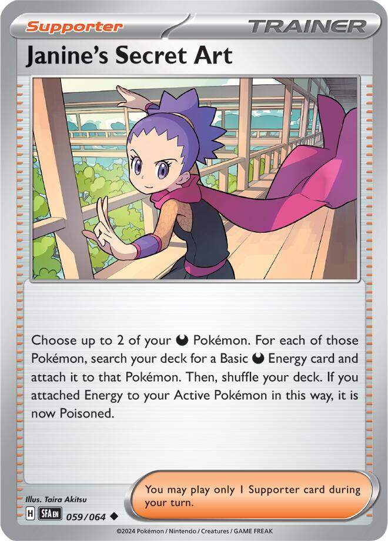
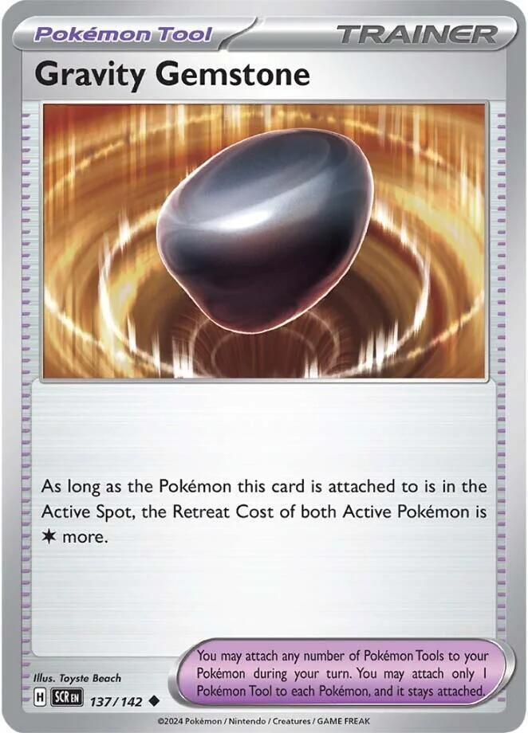
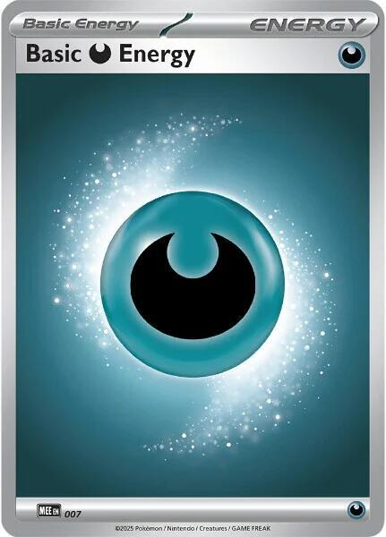
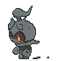

x4
x4 x3
x3 x3
x3 x4
x4 x2
x2 x2
x2 x2
x2

 x3
x3 x3
x3 x2
x2![Boss's Orders [Ghetsis]](./assets/654453_bosss-orders-ghetsis.jpg) x2
x2
x2
 x4
x4 x4
x4



 x4
x4 x4
x4
x4 Xero's Phantom Toll
Xero's Phantom Toll 

Two Megas split one toll booth · the house's first two-color 60
← back to all decksFour findings shaped this 60, and each one is checkable.
The meta plays Mega Chandelure as a one-line deck. The lists posting results on Limitless online play run a fat 4-4-4-3 Chandelure line, using the Twilight Masquerade Chandelure's Alluring Light as a draw engine inside the Psychic deck, plus a small Fire splash. This deck spends those seats on a second Mega instead. That is a named trade: the meta shell is more consistent, and this shell gets to pick its wall by matchup, which no mono deck in the house can do.
The standalone Mega Gengar box loses. Its Limitless record is 2 wins against 17 losses, the same data point that shaped Curse Toll. The card wins as a package inside a shell that already works. Here it is a wall and a second button, never the plan.
Exactly one Trainer in Standard raises the opponent's Retreat Cost. A sweep of the full legal pool found four opponent-side retreat raisers in the format: Binding Flame, Ariados's Big Net, Gravity Gemstone, and Rillaboom's Drum Beating. Only the first three stack with Phantom Maze on your own attack turn, and Gemstone is the only one that is not a Pokémon. It costs about twenty cents, and it is the one card in this list the collection does not own.
Team Rocket's Energy cannot power this deck. It reads like the fix for a two-color 60, it provides exactly this deck's colors, and it self-discards off anything that is not a Team Rocket's Pokémon. The Rocket splash here is trainers only, and the skip table has the receipts.
x4x3x3x4x2x2x2x3x3x2x2
x2x4x4
x4x4
x4Pokémon (22)
| Qty | Card | Set | Number | Reg |
|---|---|---|---|---|
| 4 | Litwick | Pitch Black | 036 | J |
| 3 | Lampent | Pitch Black | 037 | J |
| 3 | Mega Chandelure ex | Pitch Black | 038 | J |
| 4 | Gastly | Phantasmal Flames | 054 | I |
| 2 | Haunter | Perfect Order | 049 | J |
| 2 | Mega Gengar ex | Phantasmal Flames | 056 | I |
| 2 | Duskull | Shrouded Fable | 018 | H |
| 1 | Dusknoir | Shrouded Fable | 020 | H |
| 1 | Marshadow | Pitch Black | 040 | J |
Trainers — Supporters (13)
| Qty | Card | Set | Number | Reg |
|---|---|---|---|---|
| 3 | Lillie's Determination | Mega Evolution | 119 | I |
| 3 | Team Rocket's Ariana | Destined Rivals | 171 | I |
| 2 | Hilda | White Flare | 084 | I |
| 2 | Boss's Orders [Ghetsis] | Mega Evolution | 114 | I |
| 2 | Janine's Secret Art | Shrouded Fable | 059 | H |
| 1 | Crispin | Stellar Crown | 133 | H |
Trainers — Items (12)
| Qty | Card | Set | Number | Reg |
|---|---|---|---|---|
| 4 | Buddy-Buddy Poffin | Temporal Forces | 144 | H |
| 4 | Rare Candy | Mega Evolution | 125 | I |
| 1 | Poke Pad | Perfect Order | 081 | J |
| 1 | Night Stretcher | Shrouded Fable | 061 | H |
| 1 | Team Rocket's Transceiver | Destined Rivals | 178 | I |
| 1 | Prime Catcher | Temporal Forces | 157 | H |
Trainers — Tool (1)
| Qty | Card | Set | Number | Reg |
|---|---|---|---|---|
| 1 | Gravity Gemstone | Stellar Crown | 137 | H |
Energy (12)
| Qty | Card | Set | Number | Reg |
|---|---|---|---|---|
| 4 | Telepathic Psychic Energy | Perfect Order | 088 | J |
| 4 | Basic Psychic Energy | Mega Evolution Energies | 005 | - |
| 4 | Basic Darkness Energy | Mega Evolution Energies | 007 | - |
22 + 13 + 12 + 1 + 12 = 60. ✓
Basics: 11 (4 Litwick, 4 Gastly, 2 Duskull, 1 Marshadow), which works out to roughly a 22% mulligan rate. Better than the lanterns' 26, worse than the Gang's 16, and priced in: Test and Tune watches it first. Every Basic except Marshadow sits at 70 HP or under, so Poffin stays live, and Litwick, Duskull, and Marshadow are Basic Psychic, so Telepathic Energy fetches them too.


 Psychic
Psychic Darkness ×2
Darkness ×2 Fighting -30
Fighting -30 1
1 legal (Reg J)Will-O-Wisp (20)
legal (Reg J)Will-O-Wisp (20)The Basic the deck stands on, and the only Psychic Litwick ever printed. The White Flare and Twilight Masquerade prints are Fire and cannot pay a cost, so the new Fire copies in the mail do not serve this line; they serve Fox's fire deck. 70 HP keeps it inside Poffin range.

 PsychicDarkness ×2Fighting -301legal (Reg J)Spreading Light - Search your deck for up to 3 Lampent and put them onto your Bench. Then, shuffle your deck.
PsychicDarkness ×2Fighting -301legal (Reg J)Spreading Light - Search your deck for up to 3 Lampent and put them onto your Bench. Then, shuffle your deck.Spreading Light schedules the Megas: search your deck for up to 3 Lampent and bench them, and each one is a Mega Chandelure next turn with no Rare Candy spent. Three copies here rather than the lanterns' four, so the fetch caps at 2 in practice; the freed seat pays for the Gengar half, and the mistakes table prices the overfetch.
 PsychicDarkness ×2Fighting -302legal (Reg J)Phantom Maze (130+) - This attack does 50 more damage for each Retreat Cost.
PsychicDarkness ×2Fighting -302legal (Reg J)Phantom Maze (130+) - This attack does 50 more damage for each Retreat Cost.Stage 2 from Lampent. Gives up 3 Prize cards. 350 HP, Retreat 2, Resistance to Fighting, and a Darkness Weakness the other half of this deck exists to cover.
Binding Flame needs no Energy and works from the Bench; every retreat the opponent pays costs one more, and every Phantom Maze hits 50 harder. It stacks. Two in play is plus 2 and plus 100, settled by the official Pitch Black strategy article. Phantom Maze itself does 130 plus 50 for each in the opponent's Active Pokémon's Retreat Cost, and The Toll Math is the full menu. Two on the board is the number; the third copy is a spare, not a resident.

 DarknessFighting ×21legal (Reg I)Petty Grudge (10)
DarknessFighting ×21legal (Reg I)Petty Grudge (10)The bottom of the Gengar line, and deliberately the Phantasmal Flames print: Petty Grudge is a guaranteed 10 where the Perfect Order print flips coins, and Gengar Gang runs that print anyway, so both decks stay sleeved. 70 HP, Poffin-legal. It is Darkness, which means two things worth memorizing: Telepathic Energy cannot trigger off it, and Janine's Secret Art can feed it.

 DarknessFighting ×21legal (Reg J)Haunt - Place 3 damage counters on your opponent's Active Pokémon.
DarknessFighting ×21legal (Reg J)Haunt - Place 3 damage counters on your opponent's Active Pokémon.Haunt places 3 damage counters for one Energy, and placed counters ignore Weakness and Resistance. The same job it does in Curse Toll: a 100 HP body opening the chip math while the Candy waits, with every counter it drops paying into the closer. Janine's Secret Art charges it from the deck.
DarknessFighting ×22legal (Reg I)Void Gale (230) - Move an Energy from this Pokémon to 1 of your Benched Pokémon.Stage 2 from Haunter. Gives up 3 Prizes, and discounts everyone else's. Shadowy Concealment takes 1 Prize off every Knock Out an opposing Pokémon ex scores on your Darkness Pokémon: Gastly and Haunter pay 0, and the Mega itself pays 2. The Psychic half gets no discount, which is exactly why the Dark wall is the cheaper wall to lose.
Void Gale is 230 for , then move an Energy from this Pokémon to 1 of your Benched Pokémon. The move is mandatory, so read it as a ferry schedule, not a bonus: one swing per charge, and every swing pre-loads the next ghost, the Haunt Haunter, or nothing you wanted if you failed to plan it. Game plan 3 is the timetable.

 PsychicDarkness ×2Fighting -301legal (Reg H)Come and Get You - Put up to 3 Duskull from your discard pile onto your Bench.Mumble (30)
PsychicDarkness ×2Fighting -301legal (Reg H)Come and Get You - Put up to 3 Duskull from your discard pile onto your Bench.Mumble (30)60 HP seed, Poffin-legal, Telepathic-legal. Come and Get You benches up to 3 Duskull from the discard pile, which turns every pitched copy into a future Dusknoir rather than a lost card.

 PsychicDarkness ×2Fighting -303legal (Reg H)Shadow Bind (150) - During your opponent's next turn, the Defending Pokémon can't retreat.
PsychicDarkness ×2Fighting -303legal (Reg H)Shadow Bind (150) - During your opponent's next turn, the Defending Pokémon can't retreat.The thirteen-counter button, imported from the lanterns with the job unchanged: once during your turn, put 13 damage counters on one opposing Pokémon, anywhere on their board, and Dusknoir Knocks itself Out. That is 130 placed damage through Weakness, Resistance, bench immunity, and every shield, for one Prize and no attack. Shadow Bind is the backup, 150 for and the Defending Pokémon cannot retreat, which holds the trap shut for a turn. No Dusclops in this list, so the button is Rare Candy or patience.

PsychicDarkness ×2Fighting -301legal (Reg J)Shadowy Knot (30x) - This attack does 30 damage for each Retreat Cost.A baby Phantom Maze worth one Prize. Shadowy Knot does 30 for each in the opponent's Active Pokémon's Retreat Cost, off a single Energy, from a 90 HP Basic. Every Flame and the Gemstone scale it exactly like the big attack, so a taxed Retreat 2 target takes 120 to 150. At 90 HP it misses the Poffin cap; Telepathic Energy is its delivery route. The single-prize echo the Megas hide behind when the Prize race tightens.
 legal (Reg I)
legal (Reg I)Shuffle your hand into your deck and draw 6; at exactly 6 Prizes remaining, draw 8. Three copies rather than the house four, because Ariana took the fourth seat: Lillie's is the play when the hand is the problem, and the shuffle half returns spare Stage 2s to where Hilda can find them again.
 legal (Reg I)
legal (Reg I)Draw cards until you have 5 in hand, no shuffle, no discard. The 8-card clause needs an all-Rocket board and never fires here; the 5-card mode is unconditional, and unlike Lillie's it keeps the combo pieces you were holding. Three copies, currently Fox's, borrowed for the test nights. If the engine sticks, three of our own cost about sixty cents and his Rocket deck goes back to whole. The one honest caveat: draw-to-5 is dead with a full hand, so play it after the hand empties, not before.
 legal (Reg I)
legal (Reg I)Search your deck for an Evolution Pokémon and an Energy card. In a deck running two Stage 2 Megas and two Energy colors, that reads "the Mega the matchup wants plus the color this turn is missing" off one Supporter.
legal (Reg I)Switch in 1 of your opponent's Benched Pokémon to the Active Spot. The trap does not spring until something heavy is standing in front of it, and this is how the heavy thing gets there. Two copies plus Prime Catcher, the Ghetsis print, shared across the house.
legal (Reg H)The Dark button. Choose up to 2 of your Darkness Pokémon; for each, search your deck for a Basic Darkness Energy and attach it. Read the text precisely, because the first draft of this deck misread it: one Energy each, to two different Pokémon, never two onto one. The canonical cast is one Dark onto the benched Gastly and one onto the Haunter, and the Gastly's Energy rides Rare Candy up into the Mega. The rider poisons your Active if you feed it, so keep the targets on the Bench, which is where this deck wants its Darkness anyway.
 legal (Reg H)
legal (Reg H)Search your deck for up to 2 Basic Energy of different types, put one in hand, attach the other. A mono deck wastes half this card. This deck is the reason it was printed: attach the Dark, bank the Psychic, or the reverse, and either way one Supporter advanced both halves. One copy, because Janine's is the dedicated Dark line and the Psychic side barely needs help.
 legal (Reg H)
legal (Reg H)Bench up to 2 Basic Pokémon with 70 HP or less. Litwick, Gastly, and Duskull all qualify, so Poffin seeds both engines at once; Marshadow at 90 is the one Basic it cannot lift. Four copies, because an 11-Basic deck cannot afford to miss its seeds.
legal (Reg I)Litwick straight to Mega Chandelure, Gastly straight to Mega Gengar, Duskull straight to Dusknoir. Four copies serving three lines is the deck's tightest budget, and the discipline rule is in the mistakes table: the first Candy belongs to Chandelure. The two riders bite as always, never on your first turn and never on a Basic benched this turn.
legal (Reg J)Search your deck for a Pokémon without a Rule Box, which here is everything except the two Megas: the glue that makes a 1-of Dusknoir and a 1-of Marshadow honest. One copy; the card is printed Poké Pad, and the database drops the accent, so this page does too.
legal (Reg H)Put a Pokémon or a basic Energy card from your discard pile into your hand. One copy of the rebuild, and it reads "basic," so it recovers the Psychic and Darkness Energy and never the Telepathic.
legal (Reg I)Search your deck for a Supporter with "Team Rocket" in its name, which in this deck is a fourth Ariana at Item speed. Borrowed alongside her, bought for thirty cents if the engine sticks.
 ACE SPEC Rarelegal (Reg H)
ACE SPEC Rarelegal (Reg H)The ACE SPEC. Their Bench to the Active Spot, and your Active to your Bench, one Item, no Supporter spent. In a deck with no Switch and no Air Balloon, the self-switch rider is also the emergency exit, so spend it on the turn that does both jobs: spring the trap on their side and unstick a wall on yours.
more.legal (Reg H)While the Pokémon this is attached to is in the Active Spot, the Retreat Cost of both Active Pokémon is 1 more. On an entrenched Mega Chandelure that is plus 50 on every Phantom Maze and one more tax on their exit, stacked on top of every Flame. The honest half of "both": it raises your Active's Retreat Cost too, which is why it lives on the Mega that plans to attack rather than retreat, and why the deck keeps Prime Catcher in reserve. The one card in the 60 the collection does not own; it is on the wanted list at about twenty cents.
There is no Stadium beside it, on purpose. The meta Chandelure lists run zero, the lanterns run zero, and the Stadium this deck's first draft carried was shooting its own Litwicks. The slot went to the Tool above.
Energy. When you attach this card from your hand to a Pokémon, search your deck for up to 2 Basic Pokémon and put them onto your Bench. Then, shuffle your deck.legal (Reg J)An Energy card that is also a Poffin: it provides , and attaching it from hand to a Psychic Pokémon benches up to 2 Basic Psychic Pokémon from the deck. Litwick, Duskull, and Marshadow qualify, and Marshadow has no other searcher. It cannot trigger off Gastly, who is Darkness. Special Energy, so nothing in the deck ever recovers it; it is a setup card, and the basics underneath it are the resilience.
legalFour copies feeding Phantom Maze's alongside the four Telepathic. Eight Psychic sources for a two-Energy attack is comfortable, and Night Stretcher recovers these where it cannot touch the special ones.
legalFour copies, and they arrive by Supporter more often than by hand: Janine's pulls them from the deck two at a time, Crispin fetches one with a Psychic riding along, and Void Gale ferries them around the board once they land. The manual attachment defaults to the Psychic side; these four exist so the Dark side never depends on it.

Phantom Maze does 130 plus 50 for each in the opponent's Active Pokémon's Retreat Cost. The deck's job is inflating that number and choosing who pays it.
| Their printed Retreat | One Flame | Two Flames | Two Flames + Gemstone |
|---|---|---|---|
| 0 | 180 | 230 | 280 |
| 1 | 230 | 280 | 330 |
| 2 | 280 | 330 | 380 |
| 3 | 330 | 380 | 430 |
At 330 you one-shot nearly every ex in the format; at 380 you one-shot every card ever printed. Shadowy Knot reads the same table at 30 per , and every gust converts a row you cannot reach into one you can.
The other ledger is the Prize sheet. Shadowy Concealment covers the Darkness half whenever an opposing Pokémon ex scores the Knock Out:
| Your Pokémon | Prizes normally | KO'd by an opposing ex |
|---|---|---|
| Gastly, Haunter | 1 | 0 |
| Mega Gengar ex | 3 | 2 |
| Litwick, Lampent, Duskull, Marshadow | 1 | 1 |
| Dusknoir (and its own button always pays 1) | 1 | 1 |
| Mega Chandelure ex | 3 | 3 |
The discount only exists while a Mega Gengar is in play, only against attack damage, and only from a Pokémon ex. Against single-prize rooms both tables go quiet, and the meta section is honest about what that costs.
The reason this deck exists. Read the room, then lead the half the room cannot punish.
| They attack with | Lead | Why |
|---|---|---|
| Fighting (Mega Excadrill, Mega Lucario, Mega Zygarde) | Mega Chandelure | The lantern half resists Fighting; the room the dark decks dodge, this deck plays. |
| Darkness (Umbreon, the house Gengars, Rocket's Crobat) | Mega Gengar | The one ghost in the house with no Darkness Weakness; the lanterns' worst matchup becomes a fair fight. |
| Pokémon ex generally | Either, Gengar benched early | Concealment turns on and every Dark body they crack pays less. |
| Single-prize grinders | Neither, reluctantly | Both Megas are 3-Prize liabilities and the discount is blank. Lean on Marshadow, Dusknoir, and the toll floor, and expect a grind. |
Do not build both Megas by reflex. Every game wants the toll engine online; only some games want the second line at all. The Gastly you bench turn one costs nothing to leave as a 0-Prize speed bump if the matchup never calls the Gengar up.
The two-color lesson, and it is scheduling, not juggling. Neither attacker ever wants a mixed cost: Chandelure needs , Gengar needs , and no body in the deck takes one of each. The manual attachment defaults Psychic; the Darkness arrives by Supporter and ferry.
| Job | Card | What it does |
|---|---|---|
| Find + bench | 4 Telepathic Psychic Energy | a attachment that also benches two Basic Psychic |
| Find both | 2 Hilda | an Evolution Pokémon plus the missing color, to hand |
| Deliver Dark | 2 Janine's Secret Art | two Basic Darkness from deck onto two benched Dark bodies |
| Split the difference | 1 Crispin | attach one color, bank the other |
| Redistribute | Void Gale | every Gengar swing ferries an Energy to the Bench |
| Recover | 1 Night Stretcher | a Pokémon or a basic Energy back from the discard |
The real bottleneck is not Energy, it is the Supporter slot: Janine's, Ariana, Hilda, and Boss's all compete for one play per turn. The default order is draw while setting up, Janine's the turn the Gastly is benched, gusts when the trap is loaded. When two of those collide, remember the toll runs on Abilities and costs nothing; a turn that only attacks is still a turn the tax collected.
How the second Mega comes online without stealing the first one's fuel.
. Void Gale for 230, and the mandatory move ships an Energy back to the Bench, pre-charging the next ghost or arming Haunt.The honest print on this plan: it is a turn slower than it looks, because Janine's feeds two different Pokémon and never two onto one. Budget the Supporter turn for it, and against rooms where the Gengar never leads, spend those turns on draw instead and let the Gastly sit.
What happens when the table math lands short. The format's big bodies run 350, and the toll table tops out at 330 in ordinary board states. The gap-closers, best first:
Step one, do you have a Basic? At 11 Basics you mulligan about one game in five; dig accordingly.
The first attachment defaults Psychic, onto Litwick if it is Telepathic. The first Candy belongs to Chandelure; the toll pays for everything else.
 across two turns or two sources.. Every swing needs a third Energy aboard or a plan for the ferry. too. Prime Catcher is the door; do not spend it as a plain gust while the Gemstone is live.
across two turns or two sources.. Every swing needs a third Energy aboard or a plan for the ferry. too. Prime Catcher is the door; do not spend it as a plain gust while the Gemstone is live.Current Standard, per Limitless play data, August 2026.
| Deck | Share | This deck's view of it |
|---|---|---|
| Dragapult variants | ~18% | Every attacker is an ex, so Concealment is on and the toll prices their Bench. Good games. |
| Festival Lead, Slowking, Alakazam, and the single-prize rooms | ~25% | The discount is blank and the Megas are liabilities. The hardest games; the Gang covers this room better. |
| Mega Excadrill ex | ~8% | Fighting. The lanterns half resists it, and the dark decks call it near unwinnable. This is the seat this deck was built to sit in. |
| N's Zoroark ex, Grimmsnarl Froslass | ~10% | Darkness rooms. Gengar walls, the lanterns stay benched, and the games are fair where the mono-Psychic list forfeited. |
| Mega Lucario ex | ~2% | Fighting again, worse. Lead the lanterns and trade carefully. |
The honest summary: this deck trades the lanterns' best-case consistency for coverage. It plays real games in the two rooms the house decks each dodge, and it pays for that with a thinner engine in the rooms they own.

Fox's Team Rocket's Mewtwo. Mewtwo ex retreats for 3, so one Flame prices it at 330 into a 280 HP body: one shot, two Prizes. His board is ex-heavy, so Concealment runs all game, and his Assassin's Return at 240 into Weakness is the reason the Psychic ghosts stay benched when Crobat is loaded; feed it the Dark wall instead, which takes it neutral. One wrinkle worth grinning at: three of his Arianas are in this deck until the singles arrive.
Fox's Flareon ex. Fire hits both halves neutral, and nothing he has one-shots a healthy 350. His Tera bench protection stops attacks, not damage counters, so Cursed Blast reaches whatever it likes. His math is two-turn math against walls that are cheaper to rebuild than his attackers are to recharge.
Fox's Sun and Moon. The matchup the lanterns lose is the matchup this rebuild is for. Moon Mirage doubles into every Psychic ghost and lands neutral on Mega Gengar, so the Dark wall leads, the lanterns work from the Bench, and the toll prices his pivots. Still a real fight; no longer a forfeit.
Xero's dark decks. Ghost against ghost. The Gengars hit the lantern half for double and the Gengar half for neutral, and both sides know exactly where the toll booth is. House rule of thumb: whoever's wall commits first loses the information war.

Free retreat is the off switch. Latias ex's Skyliner gives their Basics no Retreat Cost, and no Retreat Cost overrides every increase, so Phantom Maze floors at 130 against their Basics and Shadowy Knot falls all the way to zero; Skyliner hurts Marshadow worse than it hurts the Maze. Do not argue with the ruling; Boss's Orders the Latias itself, 210 HP at Retreat 2, one Flame, 280, gone. Until then the closers that never cared about retreat carry the game: Dusknoir's button, Haunt, and Void Gale's flat 230.
Ability lock hurts twice. Anything that shuts Abilities off takes Binding Flame and Concealment down together, and the Maze falls back to 130 plus printed Retreat. The toll half survives on Gemstone alone; those games are about the closer suite.
Ruffian pops a Tool and a Special Energy in one Supporter, which here reads Gemstone and a Telepathic in the same breath. Against Ruffian rooms, attach Telepathic to bodies that already did their searching.


Favorite number three earned his cut honestly, and the card text is the reason. Horrifying Rondo pays 50 for each of your Benched Pokémon with damage on it, and this deck generates none of that on its own board. The first draft fueled it with Risky Ruins, a Stadium that stamped 2 counters on every non-Darkness Basic either player benched, which meant every Litwick, Duskull, and Marshadow this deck seeds arrived pre-wounded for the opponent's convenience. Two independent redesigns cut the package, and the verification pass agreed: the Stadium was two-thirds of the reason the first draft's own seeds kept dying.
Gourgeist is not homeless. The lanterns page already documents the clean version of his engine, Froslass pinging your own Ability Pokémon at every Checkup (Feeding the Rondo), and both Froslass and both Gourgeist ex stay in the box waiting for that build to get its own night. A pumpkin deserves better than a stadium that burns down his own patch.

The list is a hypothesis; games are the data. Symptoms and their fixes:

Two ways to count the cost. Built the intended way, by taking the lanterns apart and borrowing Fox's trainers until their replacements arrive, the cash cost is about a dollar and a half: three Ariana, one Transceiver, one Gravity Gemstone. Kept as a fourth standing deck next to a sleeved Psychic Lanterns, the shared cores below stop being shared and the bill grows by two Mega Chandelure, four Telepathic, and a fourth Mega Gengar; the own counts are live from the collection database, and Need sums across deck pages, so the wishlist does that arithmetic for you.
| Card | Own | Need | Buy | Note |
|---|---|---|---|---|
| 10 | 4 | ✓ | the Psychic print; shared with the lanterns |
| 9 | 3 | ✓ | shared with the lanterns |
| 4 | 3 | ✓ | sleeved in the lanterns today; this build inherits them |
| 9 | 4 | ✓ | the Gang runs the Perfect Order print; no conflict |
| 2 | 2 | ✓ | the Haunt print, not Spooky Shot |
| 3 | 2 | ✓ | Snake Charmer sleeves 2 of the owned 3; a 4th copy keeps every mode whole |
| 6 | 2 | ✓ | |
| 2 | 1 | ✓ | |
| 2 | 1 | ✓ | |
| 11 | 3 | ✓ | shared |
| 4 | 3 | ✓ | Fox's copies are the loaners; buy 3 so his deck stays whole |
| 7 | 2 | ✓ | |
| 10 | 2 | ✓ | shared |
| 2 | 2 | ✓ | the only Darkness accel Supporter in Standard |
| 4 | 1 | ✓ | |
| 9 | 4 | ✓ | shared |
| 10 | 4 | ✓ | shared |
| 4 | 1 | ✓ | printed Poké Pad; the database drops the accent |
| 10 | 1 | ✓ | shared |
| 4 | 1 | ✓ | Fox's copy is the loaner; buy 1 |
| 1 | 1 | ✓ | ACE SPEC; the TEF print, the lanterns keep the PRE copy |
| 0 | 1 | 1 | the one card the collection does not own; about twenty cents |
| 4 | 4 | ✓ | sleeved in the lanterns today |
| Basic Psychic Energy MEE: Mega Evolution Energies 5 | 27 | 4 | ✓ | never rotates |
| Basic Darkness Energy MEE: Mega Evolution Energies 7 | 38 | 4 | ✓ | shared |
| Total to buy | 1 |